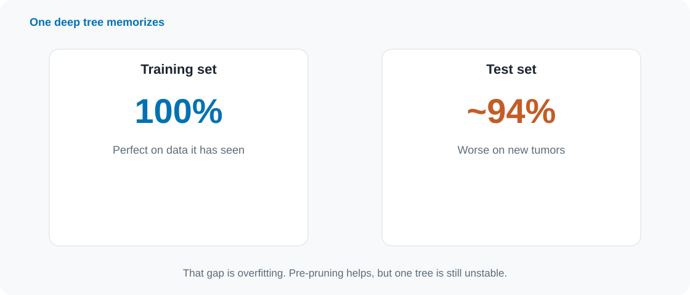
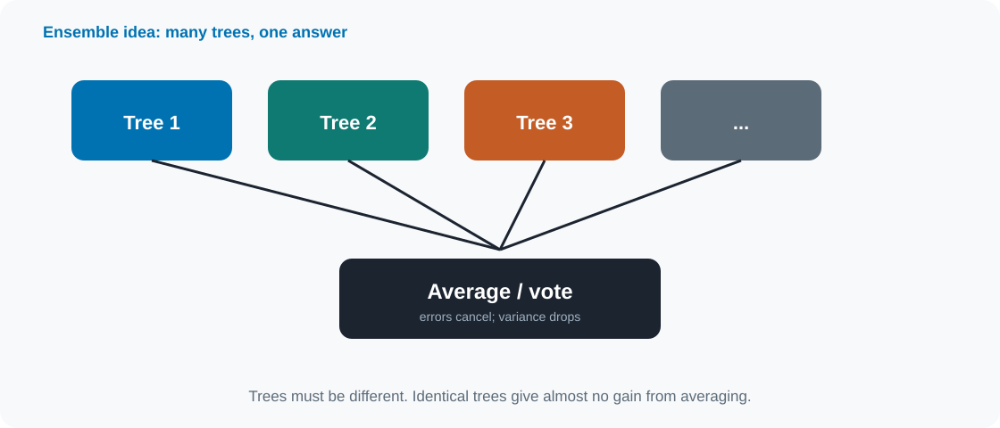
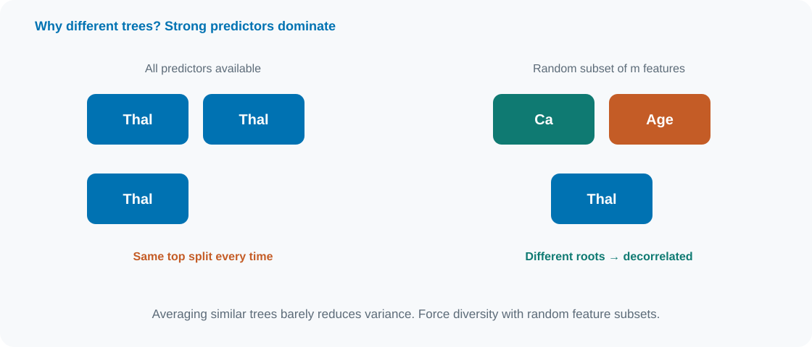
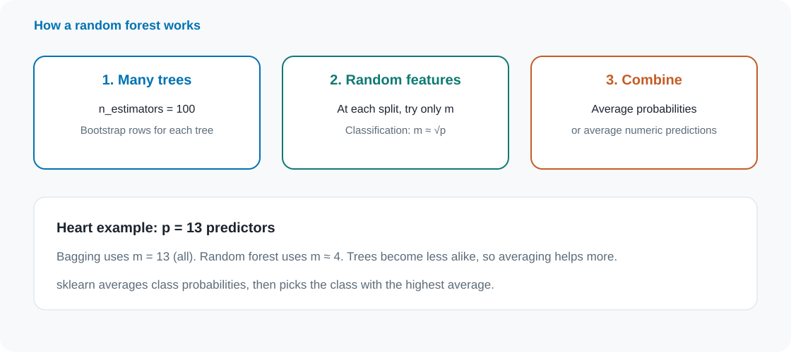
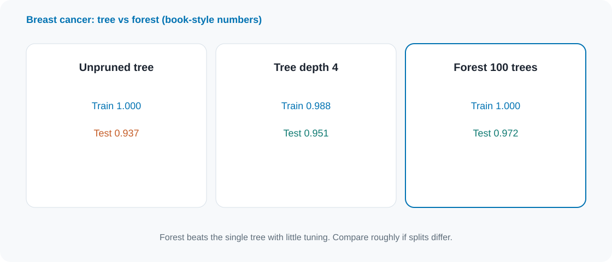
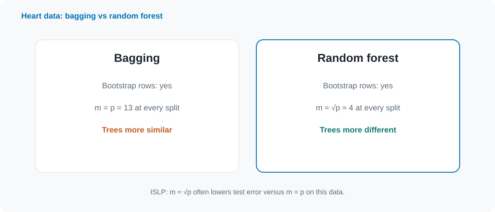

Data 201 · Week 11
Random forests
From one tree to a forest: building, tuning, and interpreting
Rebin Muhammad
Montgomery College
Today
Five stops
01
Why forests
One tree overfits; averaging reduces variance.
02
How they build
Bootstrap rows + random features.
03
Tuning
n_estimators, max_features, max_depth.
04
Examples
Cancer, moons, Heart; importances.
05
Boosting + lab
Short contrast, then digits lab.
Part 1
One deep tree
memorizes the training data.
We need many different trees whose mistakes cancel.
Overfitting
Perfect on training, worse on new data

Ensemble
Many different trees, one answer

Diversity
Strong predictors make trees look alike

Random forest
Bootstrap rows + random features at each split

Combining
Majority vote is not what sklearn does

Tuning
Three knobs you will actually use

In code
Split, fit, score
from sklearn.ensemble import RandomForestClassifier
X_train, X_test, y_train, y_test = train_test_split(
X, y, random_state=0)
forest = RandomForestClassifier(n_estimators=100, random_state=0)
forest.fit(X_train, y_train)
forest.score(X_train, y_train)
forest.score(X_test, y_test)Split first. Fit on training only. No scaling needed for trees.
Example 1
Breast cancer: forest beats a single tree

Example 2
Two moons, five trees
Example 3
Heart disease: bagging versus random forest

Interpretation
Feature importance: what the forest used

Importances
Single tree vs forest
Single tree
Often a few features dominate
Many zeros if never chosen
Unstable across samples
Random forest
Importance averaged over many trees
More features get nonzero scores
Broader picture of the data
Tradeoffs
Strengths and limits
Strengths
Often strong with little tuning
No feature scaling
Mixed feature types OK
Easy to parallelize (n_jobs)
Limits
Hard to read hundreds of trees
Heavier than linear models
Weak on huge sparse text
Need random_state for demos
Boosting
Another ensemble: trees that fix past mistakes

Keep these
Five takeaways
Lab
Digits lab in Google Colab
Baseline tree → random forest → tune → importances → peek at boosting.